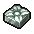

A carved piece of stone
| A carved piece of stone | |
|---|---|
 | |
General Information
| |
Type :
|
Stone |
Stack size:
|
30 |
Base Cost :
|
|
Source(s)
| |
Buy from :
|
Cory (T II) |
Sell to :
|
Cory (T II) |
| Stone cutter II | |
Study Information
| |
Study reward:
|
|
Technical Information
| |
Internal name:
|
stone_plate_3 |

A carved piece of stone is a refined crafting material that is used to make the highest tier of stone-work. It's one of the few items that require faith in order to craft, making them relatively precious. They can be crafted at a stone cutter II or bought from the vendor Cory.
Recipe
| Stone cutter II | ||
|---|---|---|
| Item Produced | Materials Required | Cost |
| 1× A carved piece of stone |
1× Iron chisel 1× A polished brick of stone 3× Faith |
- |
Study
| Study table | |||
|---|---|---|---|
| Tech Points | Resources Required | Energy | Notes |
| 5× Faith 5× Science |
- |
Not decomposable | |
Crafting
| Stone cutter II | ||
|---|---|---|
| Item Produced | Materials Required | Cost |
| 1× Stone plinth |
1× A polished brick of stone 1× A carved piece of stone 2× Complex iron parts |
- |
| 1× Stone sculpture |
1× A polished brick of stone 1× A carved piece of stone 2× Complex iron parts |
- |
| 1× Stone sculpture II |
2× A carved piece of stone |
- |
Building
| Graveyard | |
|---|---|
| Item Produced | Materials Required |
| Stone prayer station |
4× A polished brick of stone 1× A carved piece of stone 1× Book |
| Build stone fence |
24× A polished brick of stone 2× A carved piece of stone 12× Complex iron parts |
| ||||||||